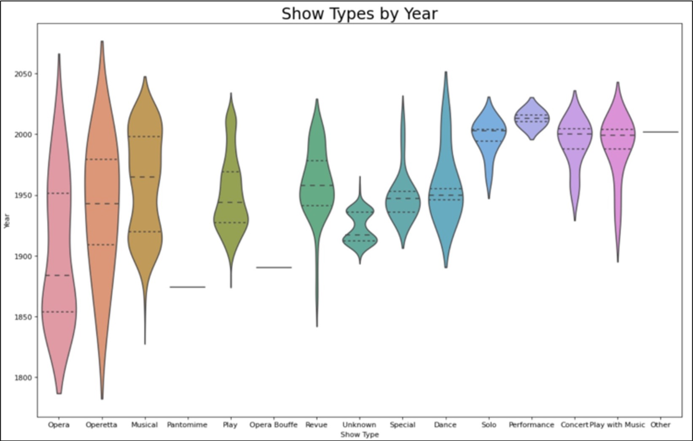

Graphically re-created the Schyluer Sisters’ Hamilton Poster using complex equations. Explain the reasoning and method behind the use of each equation.
×
2 / 3 Rube Goldberg Machine
Built a Rube Goldberg Machine of Musical Instruments using The Geometer's Sketchpad. The process involved parametric equations, kinematic equations, and time functions to replicate the Domino Effect.
3 / 3 Open Broadway Data

Currently working with Data Scientist in New York City to build a FrontEnd of all the data to exist on Broadway. In collaboration with Director, Producer, and Choreographer Warren Adams, data will be used to solve Broadway diversity issues.